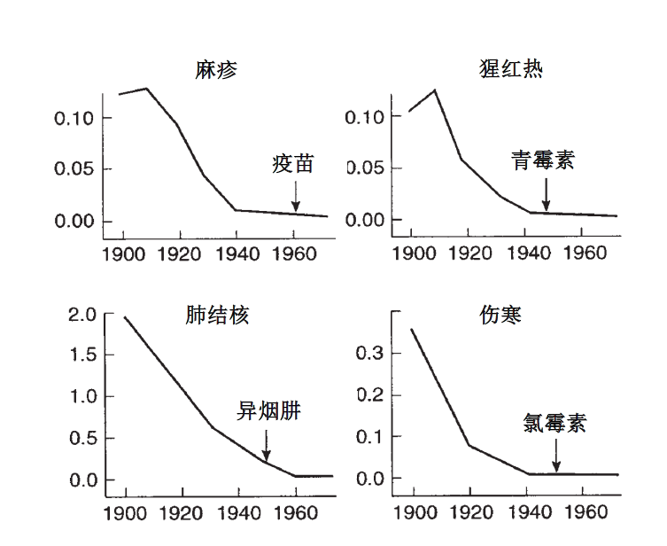

作家方方：疫情看上去稳定，但人心似不太稳（57）-作家方方-财新博客-新世纪的常识传播者-财新网
原文链接 备份链接 3月21日。 封城第59天。这么长时间了！ 昨天那么大的太阳，今天突然就阴了。下午还下了点雨。这时节的春雨，对于院子里的树以及花，都还是很需要的。前两三天，武大樱花盛开，树下空荡无人，估计是记者拍了一些照片，同学群里便 …

疫情危机再一次提醒我们，在公共卫生方面，从政府、社会到公众，我们还有很多功课未能完成。
作者 | 朱纪明 程峰（清华大学医学院公共健康研究中心）
编辑 | 徐菁菁
药物和疫苗不一定“特效”
身在疫情中，大众的期待是特效药和疫苗。面对疾病，这是人们自然的第一反应。但如果从健康经济学的视角回顾一下历史，以公共卫生的角度看，药物和疫苗并不一定“特效”。
下图描述的是四种传染病死亡率的变迁。麻疹、猩红热与伤寒“特效药或疫苗”的姗姗来迟，对其导致的人口死亡率的整体降低作用几近于零。

图1：美国四种传染病的每千人口标准化死亡率
（摘自Folland S, Goodman A, Stano M. The Economics of Health and Healthcare, 7th Edition.Upper Saddle River: Pearson Education, Inc, 2013, p.90. 其数据来源于：Mckinlay JB, Mckinlay SM. The Questionable Contribution of Medical Measures to theDecline of Mortality in the United States in the Twentieth Century. The MilbankMemorial Fund Quarterly. Health and Society 1977; 55: 405-28.）
历史告诉我们，在大多数情况下，有效的医学干预手段（effective medical intervention）通常是在人口死亡率大幅下降后才出现。很多知名的学者针对医疗服务（medical care）对健康贡献的研究结果是令人惊讶的——医疗服务对健康的贡献在10%左右，高一点的估计也不过是20%（McGovernet al, 2014）。我们不是想渲染医学研究与实践不重要，相反，它极其重要和有价值。但认识医学与科学的局限性，也是重要的科学素养；认识到人类的无知与渺小，反而是我们获取智慧与力量的第一步。

汉阳医院，无处可去的患者在路边打吊瓶。| 黄宇 摄
我们必须承认的事实是，面对疾病，人们首先想到的是“征服”，然而，连很多人都不以为然的“流感”也从未被“征服”。两年前，一篇网络纪实红文《流感下的北京中年》记录了一名患者的经历。从吹风、“感冒流涕”，最终他也采用了这些天在疫情消息中多次被提及的“体外膜肺氧合”（简称ECMO）抢救，历时29天仍然撒手人寰的故事。事实上，严谨的研究显示中国每年流感相关超额呼吸系统疾病死亡人数（Influenza-associated excess respiratory deaths）是8.4万到9.2万（Li et al, 2019），全球每年流感相关呼吸系统疾病死亡人数（influenza-associated respiratory deaths）的估算是29万到65万（Iuliano et al, 2018）。如果没有现在的新冠肺炎，恐怕很少有人会关注这些流感死亡数据，哪怕它们从一些维度看比新冠肺炎更惊人。略有讽刺意味的是，这些研究本来是提醒我们注重防控的，但是现在却反过来被用于安抚我们的恐惧。
既然医疗服务对健康的贡献只占10%，那其它的健康决定因素是什么？研究表明行为（behavior）对健康贡献占40%左右（Mcginnis et al, 2002）。例如，吸烟是一种行为，相当一部分公共卫生专业人士从事控烟工作，权威研究亦显示烟草对死亡的贡献高达18%（Mokdadet al, 2004）。我不用查任何文献，也可以自信地讲，烟草每天杀死的中国人，都远远高于这次疫情目前的死亡总人数。在疫情的发展阶段，我们尚无有力的证据建立起新冠肺炎与吸烟之间的关联。不过，《柳叶刀》（The Lancet）上的一篇文章，对武汉金银潭医院在1月1日至20日期间收治的99位患者的数据进行了描述性分析，最先病逝的两名患者都有长期吸烟史（Chenet al, 2020）。新冠肺炎也是肺炎，讨论肺炎很少提及控烟也就罢了，竟然有不少文章公然宣扬吸烟有助于防范新冠肺炎的诸多“理论”。我们为什么不戒烟、不控制自己的行为、不对自己负责，却一定要求生病后被治愈呢？
中国大众习惯了生病直接去大医院的门诊。此外，我们看病，总喜欢来点儿“实实在在”的东西——例如，开点药、挂个水。我有一个亲戚，有一次我见到他很失落地从医院回来，因为医生没给他开药，他觉得白去看病了。是啊，如果医生嘱咐我们多喝水、多休息、注意手卫生、注意打喷嚏礼仪、在家里待着之类，我们觉得这实在不属于什么有效的医疗处方啊。终于，有人告诉了我们“双黄连”，总算有点儿“实实在在”的东西了，于是我们戴着口罩、在新冠病毒的威胁下英雄般地挤着长队。
疫情危机再一次提醒我们，在公共卫生方面，从政府、社会到公众，我们还有很多功课未能完成。

远征 摄
我们需要补足的公共卫生课
人们翘首期盼科学家在实验室攻克病毒，热血沸腾地看着呼吸、危重症医学、急诊、感染等领域的医生奔赴前线。在危急时刻，公共卫生似乎缺乏存在感。民众不明白公共卫生到底是什么，在做什么。事实上，上述我们提到的疾病的防控，行为学，还包括大众的就医行为，都属于公共卫生的范畴。
当前，世界诸多科研团队日夜奋战，希望能够创造在疫情严重暴发期间有疫苗问世并应用的壮观景象。抗病毒药物瑞德西韦（Remdesivir）进入临床试验，也给了人们药到病除的希望。但回顾非典（SARS）肆虐时，开发疫苗很紧迫，也取得了很多突破。非典过后，特效药和疫苗的开发似乎没有用了，开发出来也没有市场，没有任何经济激励机制，于是很多研究没有继续下去，现在看来可能是非常可惜的。从卫生政策的角度，这需要政府的战略投入与支持。
这次的新冠肺炎发生了多起医院院内感染。这涉及职业健康和医院管理，这些都属于公共卫生的领域。在新冠肺炎疫情中，我们也看到一些人忘记了人本性的真善美，粗暴地查武汉车、围堵武汉人，引发人们对伦理的担忧。伦理问题也是公共卫生的重要研究领域之一，重大公共卫生危机处理的每一个决定都充斥着伦理权衡。
特别需要关注的是，公共卫生注重建立完整的医疗健康服务体系。我国正在回顾始于2009年的新一轮医改成就，近十年医改评估的一个巨大反思是基础医疗（primary care）的薄弱（Yip et al, 2019）。大部分优质医疗资源在三级医院，这样的现实同上述就医行为相互强化，民众习惯了跳过基础医疗，直接去三级医院。医疗服务与就医行为处在一种无序的状态。

武汉方舱医院医护人员 | 远征 摄
我国的公共卫生与临床缺乏合作和协调。近几年建立了很多健康管理项目，各种体检机构更是如雨后春笋般涌现。健康管理，预防，筛查，都是美妙的公共卫生字眼。然而，公卫中真正意义上的筛查（screening）并不仅仅是一个检测（test）。如果不同临床结合，所谓的“筛查”没有跟进，没有诊断与有效的干预，很多筛查可能不仅没用，而且有害。我们很多公卫服务中“筛查”出来的问题，需要患者自己去评估，自己去四处找医院、找医生。这样的公卫是绵软无力的。总之，我们缺乏的是一个以人为中心的整合型医疗健康服务体系。
这样无序的体系造成了效率的损失与沉重的负担，最终既没有患者满意度又缺乏疗效。我们仔细梳理上文中提到的《流感下的北京中年》会发现，患者29天竟然辗转了五家医院，需要自己协调床位、陪护，甚至一些设备和药物（例如监护仪和达菲）、还有水深的“献血”等一系列问题。最后花费至少38万元（我们研究的估算），患者依然离世，就连去世后是走殡仪馆还是太平间等问题都仍然混乱不堪。这是支离破碎的医疗健康服务体系日常的生动写照，与今天新冠肺炎疫情初期就诊的诸多情形如出一辙。
武汉是有很多引以为豪的三甲医院的，可再强大的三甲医院，没有有质量的基础医疗分担，没有整合型的医疗体系有序协作，面对一个人口基数超过纽约与伦敦的特大型都市，其脆弱性可想而知。这么多患者挤在大医院的门诊是非常危险的，对医护人员也是毁灭性的打击。而且，已有上千床甚至上万床的巨无霸三甲医院也无法接收这么多的患者。出于无奈，定点医院只能接收重症患者；很多患者虽然经过”筛查“，但在这个体系中依然如同大排档的消费者，很多轻症患者成了新冠病毒“移动传染源”。于是，越来越多的人变成了轻症患者，越来越多的轻症患者变成了重症患者。疫时的混乱只是医疗健康服务体系与相应的就医行为在一个月内集中的呈现。

1月底，武汉大学中南医院急救中心接收的新冠肺炎重病号。| 蔡小川 摄
同样，当疫情已经爆发，一个医院主导的体系的第一思路依然是建大医院。当然，在现有的体系下，疫情已经进展到这一步，建各种小汤山医院也是必要的。建大医院的速度令世界叹为观止，但重新反思医疗服务体系，需要的是一个有序、有层级的完整体系与网络来对抗任何疾病流行和爆发。在疫情初期经历了对大医院及其医护人员难以承受的冲击后，武汉动员社区，力图开展分级诊疗，之后又建立方舱医院。这些重大的举措对遏制疫情蔓延起到重要作用，践行了公共卫生与基础医疗的很多理念。方舱医院是由会展中心、体育馆等临时改建，一天就可以建好，它当然在很多功能上难以媲美传染病专科医院。但是，它事实上在疫时提供了基础医疗（primary care）。
 2020年2月4日，武汉在建的三家方舱医院医疗隔离点之一武汉客厅，2000张床位准备就位。| 远征 摄
2020年2月4日，武汉在建的三家方舱医院医疗隔离点之一武汉客厅，2000张床位准备就位。| 远征 摄
终于，整个医疗健康服务体系变得有序了，基层社区全面“筛查”，方舱医院负责轻症患者，定点医院救治重症患者。
建立这样一个整合型应急医疗健康服务体系，付出了巨大的代价，唯望这些理念可以在疫情结束后继续保留在我们日常运营的医疗健康服务体系中。
_（注：原文《新冠肺炎疫情中无形的公共卫生》于2月11日刊登在清华大学医学院公众号上，在原作者的授权与参与下，经过删改和编辑载于《三联生活周刊》公众号。）
_
参考文献
Chen N, Zhou M, Dong X, et al. Epidemiological and clinicalcharacteristics of 99 cases of 2019 novel coronavirus pneumonia in Wuhan,China: a descriptive study. Lancet 2020 January 29 (Epub ahead of print).
Iuliano AD, Roguski KM, Chang HH, et al. Estimates of global seasonalinfluenza-associated respiratory mortality: a modelling study. Lancet 2018;391: 1285-300.
Li L, Liu Y, Wu P, et al. Influenza-associated excess respiratorymortality in China, 2010–15: a population-based study. Lancet Public Health 2019; 4: e473-81.
李可.流感下的北京中年.2018.https://mp.weixin.qq.com/s/fqJ0NYpumVKPQhkOMQd8Hg（accessed Feb 3, 2020)
Mcginnis JM, Williams-Russo P, Knickman JR. The Case For More ActivePolicy Attention To Health Promotion. Health Affairs 2002; 21: 78-93.
McGovern L, Miller G, Hughes-Cromwlck P. The Relative Contribution ofMultiple Determinants to Health Outcomes. Researchers continue to study themany interconnected factors that affect people’s health. Health Affairs 2014.
Mckinlay JB, Mckinlay SM. TheQuestionable Contribution of Medical Measures to the Decline of Mortality inthe United States in the Twentieth Century. The Milbank Memorial FundQuarterly. Health and Society 1977; 55: 405-28.
Mokdad A, Marks JS, Stroup DF, et al. Actual Causes of Death in theUnited States, 2000. JAMA 2004; 10: 1238–45.Yip W, Fu H, Chen AT, et al. 10years of health-care reform in China: progress and gaps in Universal HealthCoverage. Lancet 2019; 394: 1192-204.
⊙文章版权归《三联生活周刊》所有，欢迎转发到朋友圈，转载开白请联系后台。未经同意，严禁转载至网站、APP等。
扫码下单新冠特刊**
「武汉会战」**

*点击阅读原文，进入周刊书店，**购买**【新冠肺炎专刊组合】*
原文链接 备份链接 3月21日。 封城第59天。这么长时间了！ 昨天那么大的太阳，今天突然就阴了。下午还下了点雨。这时节的春雨，对于院子里的树以及花，都还是很需要的。前两三天，武大樱花盛开，树下空荡无人，估计是记者拍了一些照片，同学群里便 …
原文链接 备份链接 做公益，只凭“鸡血”“热情”，这是不行的。 口述 | 周健（北京感恩公益基金会理事长） 整理 | 王煜 这些天以来，许多事情让我非常揪心。 湖南衡山县的乡镇医生宋英杰，连续十几天在抗疫岗位上工作，过劳去世，因公殉职时 …
原文链接 备份链接 总体而言，港人对待疫情，后来就没有内地那么紧张了。我妈妈讲，她觉得作为一个香港居民，自己最大的感受是彷徨。她抱怨道，在香港，没工开等于没饭吃了；公司起先通知放假到24号，何时复工再议，而现在仍然是等通知的状态。 …
原文链接 备份链接 研究者正试图揭示新冠病毒的致病性、致死性机制，为临床治疗提供新依据，阶段结果是新冠病毒的致病特征与SARS相似，而进一步的结果或将由解剖揭开 2020年2月初，武汉金银潭医院隔离病区内，医护人员正在给新冠肺炎患者做治 …
原文链接 备份链接 疫情严峻，武汉仍在不断征集新冠肺炎床位。重压之下，各家医院肿瘤科「只出难进」，有患者被迫出院，通过网络发帖求助；也有患者试图寻求省外求医路，却被两边「入院接收单」与「通行证」夹在中间，难寻答案。 —— 同一个家庭里的新 …